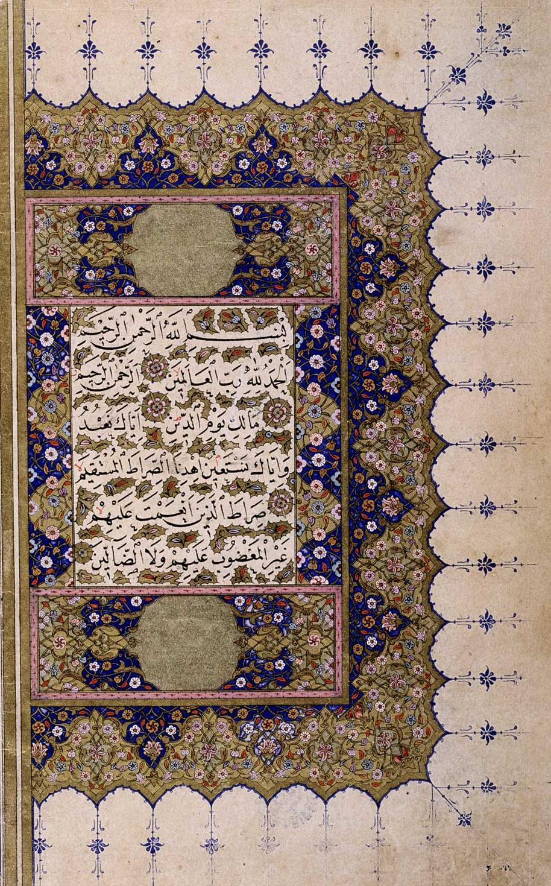

Qurʼon qanday tuzilgan va nozil boʻlgan: sura, oyat, juz va oʻqish asoslari
Qurʼon 114 sura va (Hafs rivoyatida) taxminan 6 236 oyatdan iborat boʻlib, oʻqish uchun 30 juzga boʻlingan. U Paygʻambar Muhammadga (s.a.v.) taxminan 23 yil (610–632) davomida, Jabroil (a.s.) orqali nozil boʻlgan. Ushbu maʼlumotnoma Qurʼonning tuzilishi, nozil boʻlishi, toʻplanishi hamda qiroat (tajvid va qiroatlar) asoslarini keng tarqalgan, umumqabul ilm doirasida — faqat faktlar bilan tushuntiradi.

Qurʼon — Islomning muqaddas kitobi. Quyida uning tashqi tuzilishi (sura, oyat, juz), nozil boʻlish tarixi, yozma matn sifatida toʻplanishi va qiroat qoidalari keng tarqalgan, umumqabul qilingan ilm asosida — faqat faktlar bilan bayon etiladi. Mazhablararo bahsli masalalarga kirilmaydi.
Tuzilishi: sura va oyat
Qurʼon 114 suradan (boblardan) iborat. Oyatlar (ayatlar) soni eng koʻp qoʻllaniladigan Hafs rivoyatida odatda 6 236 deb keltiriladi; sanoq anʼanalariga qarab bu raqam biroz farq qiladi (masalan, «Bismillah»ning yoki ayrim bosh qismlarning alohida oyat sanalishi tufayli). Eng uzun sura — «Baqara» (286 oyat), eng qisqasi — «Kavsar» (3 oyat). Birinchi sura — «Fotiha»; aksar suralar «Bismillahir-Rohmanir-Rohiym» bilan boshlanadi, 9-sura «Tavba» esa bundan mustasno.
Juz, manzil va boshqa boʻlimlar
Oʻqish va yodlashni osonlashtirish uchun Qurʼon 30 juzga (pora) boʻlinadi; shuningdek 7 manzilga, undan kichik hizb va ruku boʻlimlariga ajratiladi. Bu boʻlimlar matnning mazmuniga taʼsir qilmaydi — ular faqat tartibli oʻqish uchun qulaylik.

Makkiy va madaniy suralar
Suralar Hijratdan (622-yil, Madinaga koʻchish) oldin nozil boʻlganlariga — makkiy, keyin nozil boʻlganlariga — madaniy deb ajratiladi. Makkiy suralar odatda qisqaroq, qisqa ohangdor oyatli boʻlib, tavhid, qiyomat va oxirat mavzularini koʻtaradi; madaniy suralar odatda uzunroq, huquq va jamoa hayotiga oid masalalarni qamraydi. Koʻp keltiriladigan taqsim — 86 makkiy va 28 madaniy sura, biroq ayrim suralarning aniq tasnifida olimlar ixtilof qiladi.
Nozil boʻlishi (vahiy)
Qurʼon Paygʻambar Muhammadga (s.a.v.) taxminan 23 yil (taxm. 610–632) davomida nozil boʻlgan. Dastlabki vahiy Makka yaqinidagi Hiro gʻorida — «Alaq» surasining ilk besh oyati («Iqraʼ…» — «Oʻqi!») bilan boshlangan. Vahiyni farishta Jabroil (a.s.) yetkazgan. Ilk vahiy anʼanaviy ravishda Ramazondagi «Laylat ul-Qadr» (Qadr kechasi) bilan bogʻlanadi. Vahiy voqea va ehtiyojlarga qarab bosqichma-bosqich tushgan; koʻplab klassik olimlar Qurʼon avval butunligicha dunyo osmoniga, soʻngra Jabroil orqali asta-sekin nozil boʻlgan degan qarashni bildirgan.
Matnning toʻplanishi
Payambar hayotida Qurʼon ham yod olish (hifz) va ogʻzaki rivoyat, ham kotiblar tomonidan yozib borish orqali saqlangan. Birinchi toʻliq toʻplam birinchi xalifa Abu Bakr davrida — koʻplab qorilar Yamoma jangida shahid boʻlgach — kotib Zayd ibn Sobit zimmasiga topshirilgan. Uchinchi xalifa Usmon ibn Affon davrida (taxm. 650) yagona rasmiy mushaf (Usmon mushafi) tayyorlanib, nusxalari asosiy shaharlarga yuborilgan. Dastlabki nusxalarda harakat (unli) belgilari va nuqtalar boʻlmagan; ular keyinroq — anʼanaga koʻra Abu-l-Asvad ad-Duʼaliydan boshlab, Umaviylar (al-Hajjoj) davrida rivojlangan.
Qiroat va tajvid
Qurʼon oʻqishning oʻz qoidalari — tajvid (harflarning toʻgʻri talaffuzi, choʻzish va boshqalar) bor. Qonuniy (mutavotir) qiroatlar yetti, keyinchalik oʻn deb belgilangan; har biri oʻz roviylari orqali yetib kelgan. Muhim nuqta: Hafs va Varsh — qorilar emas, roviylardir. Bugungi kunda dunyoda eng keng tarqalgani — «Hafs an Osim» qiroati; u Markaziy Osiyoda, jumladan Oʻzbekistonda ham standart. Shimoliy va Gʻarbiy Afrikada «Varsh an Nofiʼ» ustun.
Til va tarjima
Qurʼon tili — klassik arab tili (Quraysh shevasiga yaqin). «Iʼjoz ul-Qurʼon» — Qurʼonning til va uslub jihatidan taqlid qilib boʻlmasligi haqidagi taʼlimot. Arabcha matnning oʻzi Qurʼon hisoblangani uchun boshqa tillarga oʻgirmalar odatda «maʼnolar tarjimasi» deb ataladi, «Qurʼon»ning oʻzi emas.
Oʻzbek va Markaziy Osiyo uchun eslatma
Oʻzbekistonda «Hafs an Osim» qiroati standart hisoblanadi. Zamonaviy oʻzbekcha tarjima va tafsirlar orasida Alouddin Mansurning «Qurʼoni Karim. Oʻzbekcha izohli tarjima»si («Sharq yulduzi» jurnalida 1990–1992-yillarda bosilib, 1992-yilda toʻliq chop etilgan) hamda sobiq bosh mufti Shayx Muhammad Sodiq Muhammad Yusufning olti jildlik «Tafsiri Hilol» asari keng tanilgan.
Nega bu muhim
Qurʼonning tuzilishi va tarixini bilish — har bir musulmon uchun ham diniy, ham madaniy savodxonlikning bir qismi. Chet elda yashayotgan oʻzbek oilalari uchun bu bilim farzandlarga kitobni toʻgʻri tanitish, turli tarjima va qiroatlar oʻrtasidagi farqni tushunish va manbalarni ishonchli baholashda asqotadi.

Manbalar
- Encyclopaedia Britannica — Qurʼan (structure, revelation, compilation)
- Wikipedia — Quran (114 suras, ~6,236 ayahs, 30 juzʼ, Meccan/Medinan, compilation)
- Wikipedia — Uthmanic codex (Abu Bakr collection, Zayd ibn Thabit, Uthman standardization ~650)
- Wikipedia — Hafs / Warsh recitation (Hafs ʻan ʻAsim most widespread, incl. Central Asia)
- Open Book Publishers — Vernacular Qurʼanic space in post-Soviet Uzbekistan (Alouddin Mansur translation)
- Wikipedia — Muhammad Sadik Muhammad Yusuf / Tafsiri Hilol